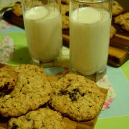

ОВСЯНОЕ ПЕЧЕНЬЕ
Хрустящие, полезные, вкусные и, безусловный плюс, легкие в приготовление печенья!
17 фото
»Подробнее 1 Comment
Хрустящие, полезные, вкусные и, безусловный плюс, легкие в приготовление печенья!
17 фото
»Подробнее 1 Comment
Удивительное, суперхрустящее, печенье загадка!
13 фото
»Подробнее 0 Comment
Горячие, мягкие и хрустящие, сладкие и сочные, это гренки! Это лакомство!
20 фото
»Подробнее 2 Comment
Сайт Катина Кухня посвящен книге The Essential New York Times Cook Book .
По рецептам которой, я с друзьями готовлю и рассказываю об этом.
Смотрите, готовьте, комментируйте и ешьте с любовью - будет вкуснее!
Подробнее о проекте можно прочитать тут.
мими Обалденно вкусный пирог, нежный, ароматный и не сухой, получилось как раз то, что я хотела! Спасибо вам за рецепт
Дана Мнямммм!!! Ждем с нетерпением новых рецептов, Катюша!!!
Дана Обязательно приготовим, может моя вреднуля доця такое съест?!!! Супер просто и вкусно!!! Спасибо Катюша!!!
Ирина Приготовила, это очень вкусно, и еще вспомнила, как мама гренки готовила с вареньем. Вкуснота, а дети у вас такие веселые.